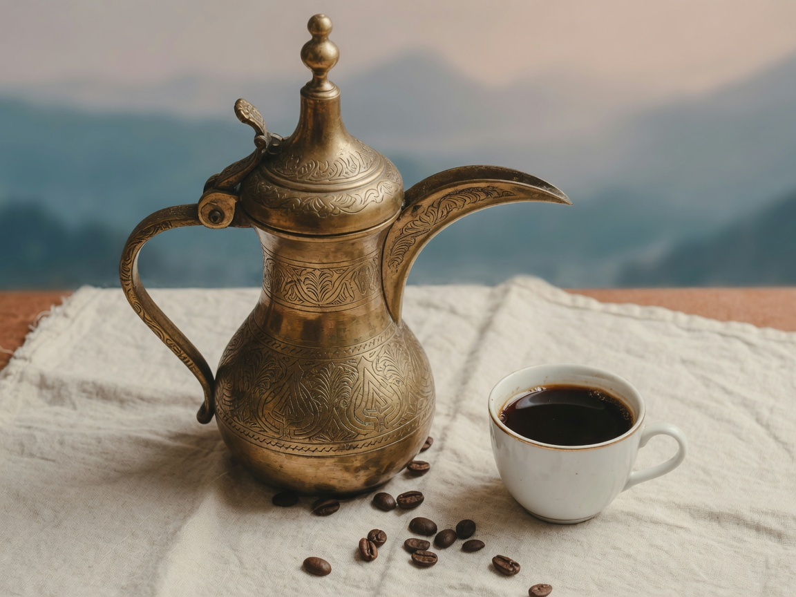
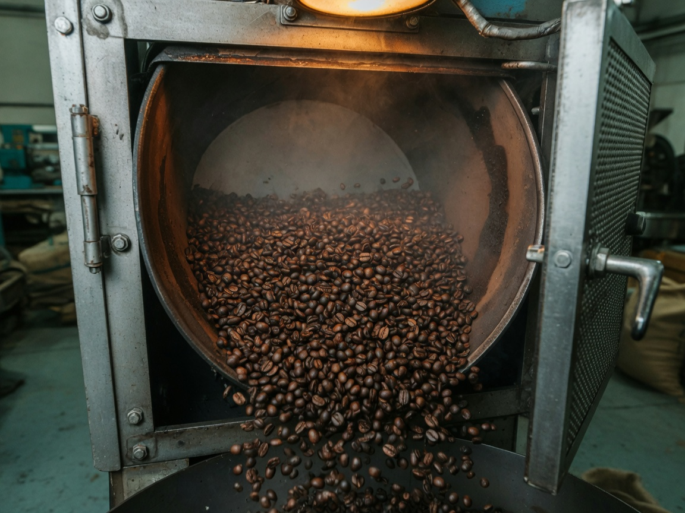
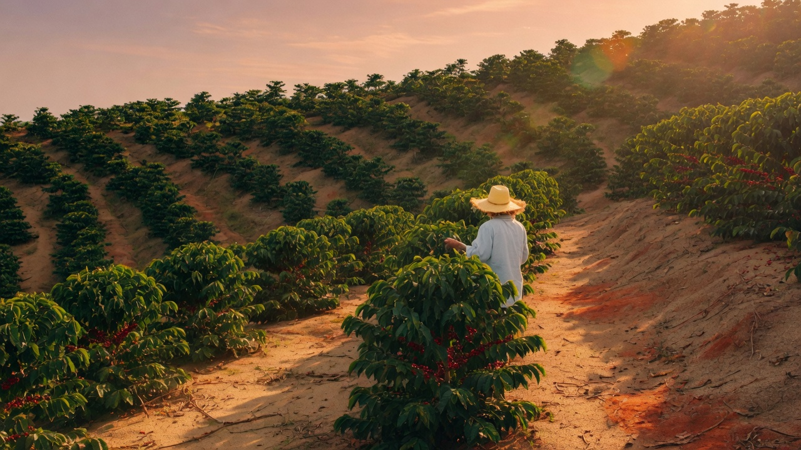

Честность
Дата обжарки, происхождение партии, вкусовой профиль — на виду, не в подвале карточки.
О бренде
С XVI века кофе в Ливане — часть культуры, знак уважения и живая традиция. Al Jar продолжает её в современном формате: семейный бренд, опыт, внимание к деталям.

Производство
Закупка сырого зерна, обжарка до 20 тонн в месяц, фасовка. Не прячем цех — дата обжарки на каждой пачке, потому что свежесть нельзя имитировать.
Специализация: эспрессо и ливанский кофе. Также — гейзер, френч-пресс, фильтр, турка (арабская и турецкая). На российский рынок бренд пришёл с многолетним опытом работы на Ближнем Востоке.

Ценности
Дата обжарки, происхождение партии, вкусовой профиль — на виду, не в подвале карточки.
Кофе — способ собраться вместе. Мы уважаем гостя так же, как хороший хозяин.
Небольшие партии, стабильный профиль, никакой агрессии в продаже.

От зерна
Главная сайта строится как это повествование. Здесь — полный рассказ: происхождение, обжарка, фасовка, ритуал дома.
Смотреть кофе